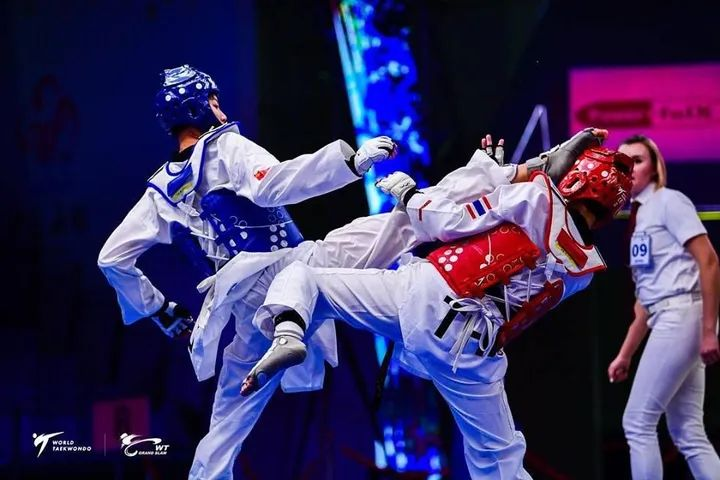

01 / COMBATE
Kyorugui
Combate deportivo que combina técnicas de ataque y defensa bajo reglas de competición oficial. Exige velocidad, estrategia, reflejos y control físico.
- Formato: 3 asaltos de 2 minutos con sistema de peto y cabezal electrónico.
- Puntuación: Patadas al tronco, técnicas con giro y ataques precisos a la cabeza.
- Protección: Dobok, peto (hogu), cabezal, bucal, antebraceras, espinilleras y empeineras.